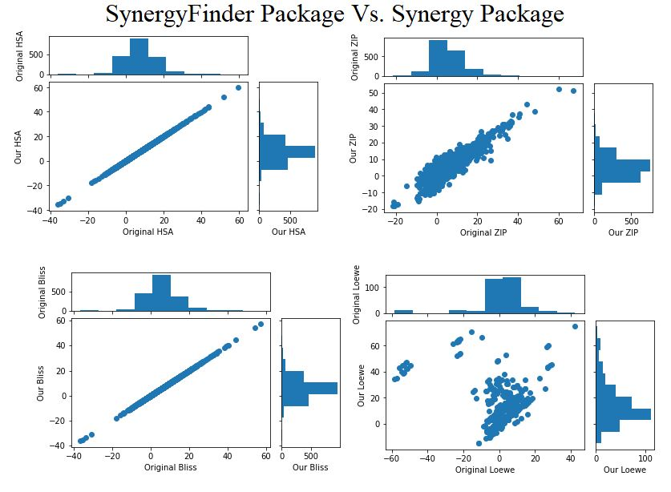

Finding Synergy Scores
November 2020
This was the peak of my career so far (as a first semester sophomore), so listen up.
If you recall from the last article, we were now using a new data set, called DrugComb. However, we kept running into problem after problem.
My task was to recalculate the Bliss, Loewe, HSA, and ZIP scores for each pair of drugs to make sure the functions were correct. Okay, easy enough, right? (spoiler: WRONG).
I searched up python synergy package go to download a python package called Synergy (because synergy scores, right?) and rerun the data set through those functions. I ended up getting wildly different results for the ZIP and Loewe scores compared to the dataset we downloaded and I could not figure out why that was the case.
After much hair pulling, I email the creator of the package to find out why that was the case. Turns out it was quite a few things.
1. The package I downloaded was different from the one used for the data set.
Wow, I really downloaded the wrong python package like a moron. Apparently, I was supposed to use the one the DrugComb team created and used called “SynergyFinder”, not “Synergy”. Oh well, you live and learn. Good news is no one ever found out I did this on accident, ha!
2. He disagreed with the DrugComb team
There were multiple variations of the Loewe function. The way SynergyFinder did it was they picked the stronger drug, and calculated E_stronger(d1+d2). The one Synergy was using assumes the combo will never become stronger than the weaker drug, because that is the boundary of the range over which Loewe is defined. Loewe has problems when one drug is stronger than the other.
For Loewe:
Loewe must calculate E_1 ^(-1) (E(d1,d2)) and E_2 ^(-1) (E(d1,d2)) where:
E_i(d_i) is a function mapping dose (d_i) to effect (E_i) of drug_i (where drug_i is treated alone, not in combination)
E_i^(-1)(E) is the inverse of the above. Given an effect E, it tells you what dose (d_i) of drug_i would be required to achieve that effect
E(d1,d2) is a function mapping doses of drugs 1 and 2 to their combination effect
These quantities describe the amounts of each drug that would be required to achieve the combination’s effect (E(d1,d2)) on their own. The problem is that E_i^(-1) is not always defined. (For example, in our drug set, ABT-888 has a very weak drug response, so E_{ABT-888}^(-1)(90) is undefined since no amount of ABT-888 would be able to obtain an effect of 90).
SynergyFinder simply picked the stronger drug (E_stronger(d1+d2)) while Synergy chose the Emax of the weaker drug.
However, Loewe should not be used when one drug is very weak in the first place.
Regarding ZIP:
Well, first there was a typo in the program for single drugs, but we will get to that in a second.
For two drugs, the problem was they were fitting Emax=0 when a drug constant was above zero. For example, with ABT-888 and 5-FU:
When 5-FU = 0 uM
E0 = 100.99
Emax = 98.84
Hill-slope = 4.4
EC50 = 3.27
When 5-FU = 0.35 uM
E0= 100.99
Emax = 0
Hill-slope = 163.4 (this is a VERY steep sigmoid, practically a step function)
EC50 = 666.1 uM (this is WAY above any concentration tested)
3. There was a bug in the program
This was actually very interesting. He had a typo in a function call for calculating ZIP when only a single drug was being considered, and I had brought it to light when doing my cross testing.
After exchanging a few emails discussing these things, I introduced him to the DeepDrug team and we got in a meeting with him to discuss everything with respect to the package, the functions, and his research. He had made a new algorithm called MuSyC, which the team is now looking at using in the research!
Back To Research